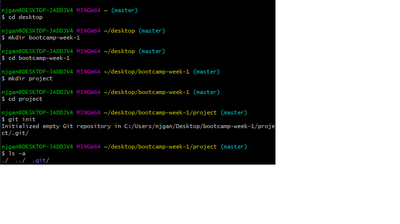
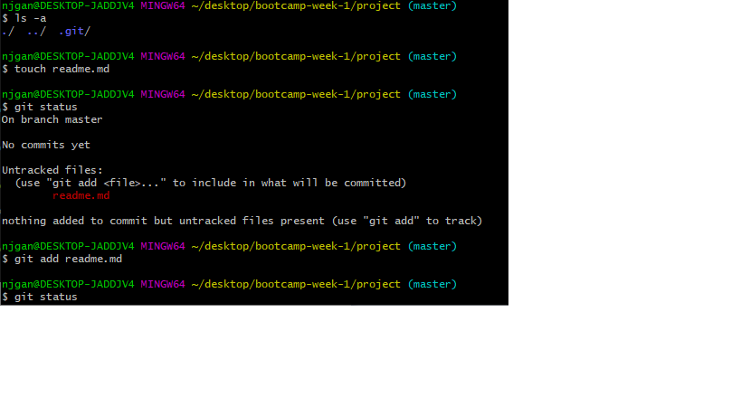
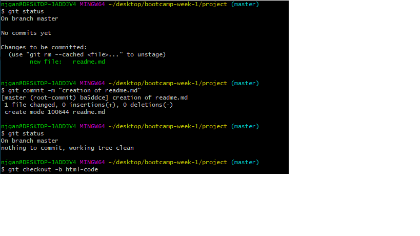
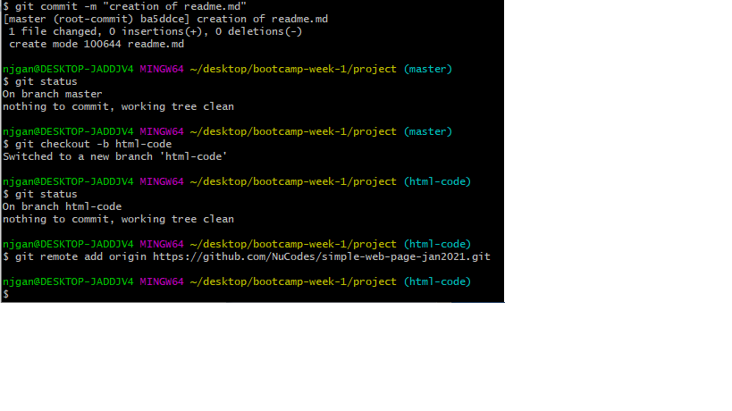

Git Version Control
In order to expand my programming skills, I have used Git version control to manage to creation of this updated simple web page.
The first thing I did was to create a new local repository and link it to a new remote repository in GitHub. To do this I also cloned my existing 'Simple Web Page' repository from GitHub, so I could work on and improve the pages I had created previously. The following screenshots show this process:
   